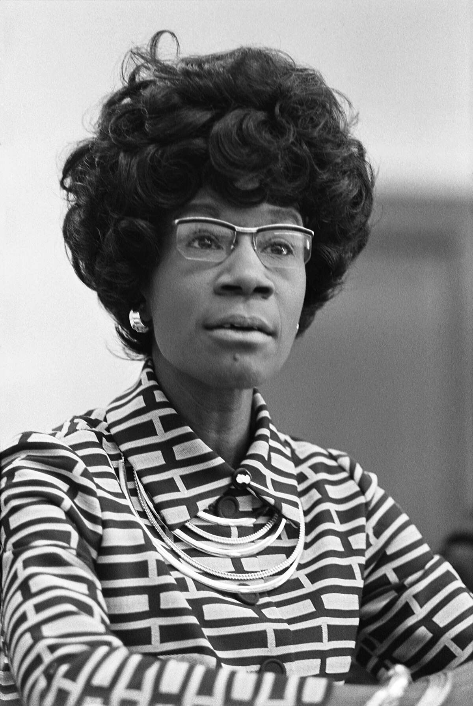
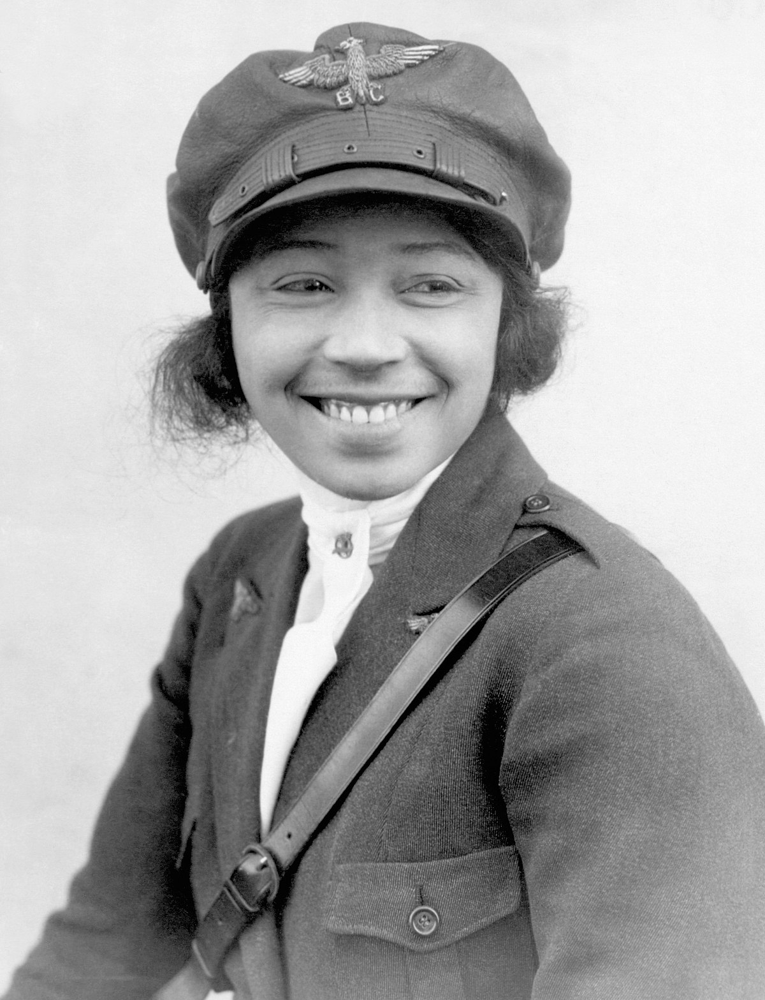
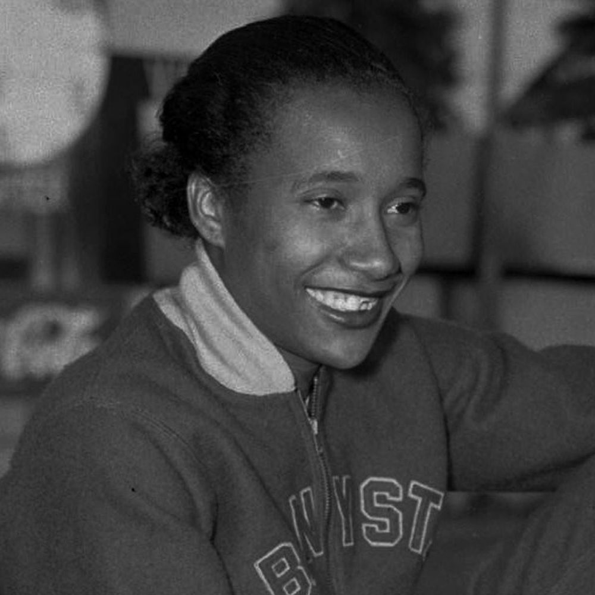

|  |
Shirley ChisholmShirley Anita Chisholm was an American politician who, in 1968, became the first black woman to be elected to the United States Congress.
|
|  |
Bessie Colemanhe was the first African-American woman and first Native American to hold a pilot license, and is the earliest known Black person to earn an international pilot's license.
|
|  |
Alice CoachmanAlice Marie Coachman Davis was an American athlete. She specialized in high jump and was the first black woman to win an Olympic gold medal.
|